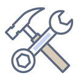

Документы
Храните документы в удобном структурированном архиве. Назначайте права доступа, поддерживайте полный жизненный цикл и версионность, отслеживайте историю работы с ними.
Облачная система электронного документооборота
DirectumRX сочетает в себе преимущества облачной и локальной систем документооборота:
Больше никаких проблем с поиском информации и прозрачностью процессов
Храните документы в удобном структурированном архиве. Назначайте права доступа, поддерживайте полный жизненный цикл и версионность, отслеживайте историю работы с ними.
Ставьте исполнителям задачи и отслеживайте ход работы. Прописывайте единые регламенты для сложных процессов. Настраивайте замещение для отсутсвующих сотрудников.

Работайте с входящей и исходящей корреспонденцией. Отправляйте поручения ответственным и запрашивайте отчеты о выполнении.

Назначайте коллегам рабочие встречи, согласовывайте протоколы совещаний, выдавайте поручения по итогам обсуждения и контроллируйте их выполнение.
Создавайте договоры на основе готовых шаблонов. Согласуйте документы по настроенным правилам. Ведите реестры и контролируйте выполнение обязательств.
Согласуйте оплату входящих счетов по настроенным маршрутам. Отслеживайте расчеты с поставщиками.
Соединяем преимущества настольных и облачных систем. Просто установить, легко настроить и быстро начать работать. А еще – это дешево.
Обеспечиваем конфиденциальность и сохранность клиентской информации, мониторим работоспособность 24/7 в рамках соглашений об уровне предоставления услуги.
Готовые и продуманные решения по работе с документами и процессами, делопроизводством, совещаниями, договорами и счетами – доступны «из коробки».
Для тех, кто привык к настольным офисным приложениям. Адаптирован под роли сотрудников и упрощает их типовые действия, содержит визуальные обложки, регламенты процессов и отчеты.
Нативные приложения позволяют полноценно работать как online, так и offline без доступа к интернету. Адаптированы под особенности Android и iOS.
Поддерживаем работу территориально удаленных подразделений с едиными правилами управления документами и процессами, в том числе с учетом разницы в часовых поясах.
Доступна даже бизнес-пользователям, без программирования. Новые виды документов и их шаблоны, правила и журналы регистрации, графическая схема регламентов.

Синхронизированы справочники договоров, контрагентов и сотрудников. Это исключает дублирование ввода информации, процессы становятся максимально прозрачны.
Автоматизация работы большого числа сотрудников – непростая задача. Правильная адаптация корпоративной системы поможет снизить естественное сопротивление пользователей изменениям, а грамотная организационная работа сделает процесс внедрения прозрачным и управляемым. Мы предлагаем несколько вариантов:
Самостоятельное внедрение подразумевает прохождение командой заказчика обучения работе в системе и реализацию проекта своими силами.
Поддержка внедрения, в рамках которой заказчик получает консультации по вопросам организации проекта, технической реализации и адаптации системы. При необходимости наши эксперты могут выехать к клиенту и помочь на месте.
Внедрение «под ключ» включает полное руководство проектом нашими специалистами. Мы гарантируем достижение целей внедрения и соответствие результатов заданным показателям эффективности.
Разработаны курсы, которые помогут администраторам разобраться в настройках системы, а рядовым пользователям – адаптироваться к повседневной работе в ней:
Курс администратора рассчитан на 24 часа (3 рабочих дня), включает изучение функций прикладного администрирования DirectumRX и практику самостоятельной настройки процессов в системе.
Семинар для пользователей длительностью 3 часа ориентирован на решение прикладных бизнес-задач сотрудниками при работе с документами и их согласовании.
В рамках работы в системе и развития автоматизации, Вы всегда можете рассчитывать на нашу поддержку:
Методологическая поддержка. Команда наших специалистов поможет в управлении проектом и выстраивании новых бизнес-процессов.
Помощь в настройке системы. При необходимости наши специалисты дополнительно расскажут и покажут, как грамотно настроить систему.
Техническая поддержка. Наши специалисты ответят на вопросы, возникающие в ходе эксплуатации системы.
DIRECTUM Jazz – удобный мобильный клиент. Теперь Вам доступна любая корпоративная информация в режиме 24/7 – вне офиса, на встречах и в командировках. Приложение работает как online, так и offline, без подключения к интернету. При появлении сети все изменения будут автоматически синхронизированы.
1. Выполнение входящего задания: открытие карточки задания, знакомство с вложением, выполнение.
2. Создание задачи по типовому маршруту с вложением, захваченным с камеры смартфона.
3. Работа в режиме offline: сохранение документа в папке «Личные», редактирование локально на устройстве, обновление документа в системе и отправка задачей.
В современных компаниях является нормой использование нескольких корпоративных систем для управленческого учета, бухгалтерии и документооборота.
При этом часть данных, например, о контрагентах организации, являются общими для всех систем. И заключение нового договора становится головной болью сотрудников – приходится заносить информацию о нем не в одну, а сразу в две или три системы. Общими данными также могут являться справочники сотрудников, подразделений и контактов организации, заключаемых договорах.
Интеграция DirectumRX и систем «1С: Предприятие» (версий 8.2, 8.3) исключает дублирование и потерю информации между системами и обеспечивает синхронизацию справочников Договоры, Контрагенты и Сотрудники.
Выполните настройку систем 1С и DirectumRX и запустите первоначальный перенос данных. Настройте назначенное задание Windows для периодической синхронизации записей.
Теперь через заданные интервалы времени планировщиком заданий Windows будет запускаться агент интеграции. Агент отслеживает изменения данных в системах DirectumRX и 1C c момента предыдущего обмена и запускает импорт и экспорт всех данных согласно правилам интеграции.
Для эффективной работы организации нужны инструменты контроля выполнения конкретных работ и мониторинга общей эффективности. DirectumRX предлагает функциональность для прозрачного управления взаимодействием сотрудников, отправки поручений и отслеживания результата, контроля внутренних процессов и показателей работы компании.
Для оценки работы организации или подразделений в системе разработана контрольная панель. С ее помощью руководители в наглядном виде получают актуальные данные по основным показателям эффективности: например, коэффициенту исполнительской дисциплины, задачам с нарушением срока исполнения, сотрудникам с самой высокой загрузкой.
Панель «Мониторинг и анализ»
Еще одна возможность прозрачного взаимодействия – поручения, представляющие собой вид официальных задач. После вынесения резолюции руководитель или его секретарь формирует задачу на исполнение поручения — указывает ответственных и назначает им сроки. К поручению можно также прикрепить дополнительные документы.
Пример поручения
После старта поручения указанный исполнитель получает задание с назначенным сроком. При необходимости инициатор может запросить у исполнителя отчет, продлить срок поручения или прекратить его.
Отправлять задачи в системе может любой пользователь – нужно только указать исполнителей и сроки. Это не сложнее отправки письма в почтовом сервисе, но при этом помимо исполнителя инициатор задает нужный срок и, что самое важное, имеет возможность контролировать процесс и видит всю сквозную переписку. По завершении работ он получает задание-контроль с результатами и ответом от исполнителя, ознакомившись с которыми либо принимает работы, либо отправляет их на доработку. В DirectumRX инициатор всегда может отследить статус отправленной задачи и ход ее выполнения.
Простая задача
Для эффективной работы сотрудникам необходимо видеть картину своей деятельности целиком, чтобы вовремя выявлять пробелы и принимать меры. Для этого в DirectumRX существуют виджеты, которые отображают основные данные по работе сотрудника: например, сколько документов ему нужно согласовать или поручений исполнить. А через ссылки в виджетах можно быстро перейти к самим работам.
Область виджетов
Помимо этого, с помощью некоторых виджетов можно отслеживать показатели работы подразделения: объем заключенных договоров, среднюю задержку выполнения заданий и пр.
Контролируйте исполнительскую дисциплину сотрудников в DirectumRX:
Компания DIRECTUM является поставщиком услуг по автоматизации документооборота в «облачной» СЭД DirectumRX и гарантирует безопасность работы в «облаке».
Запущены организационные, административные и технические меры по сохранности информации:
узел связи защищен внешним firewall;
данные передаются строго по защищенным протоколам (SSL);
оперативно обновляется ПО Microsoft (Windows Server, Microsoft SQL Server и т.п.);
доступ специалистов DIRECTUM к данным возможен только для решения инцидентов и регулярного обслуживания базы данных, только после подписания соответствующего соглашения о конфиденциальности, только специалистами уровня не ниже системного инженера.
Поддерживается резервное копирование и возможность восстановления данных:
1 раз в неделю – полное копирование;
ежедневно ночью – инкрементное копирование;
глубина хранения резервных копий – 2 недели;
максимальный срок восстановления системы из резервных копий – 8 часов.
Компания DIRECTUM несёт ответственность за качество работы сервиса:
круглосуточный мониторинг работоспособности гарантирует своевременное выявление неполадок и скорейшее их устранение;
компенсация по 1% от месячной суммы договора за каждый час недоступности.

Бесплатная презентация – это лучший способ оценить продукт лично!
Получить презентацию легко: